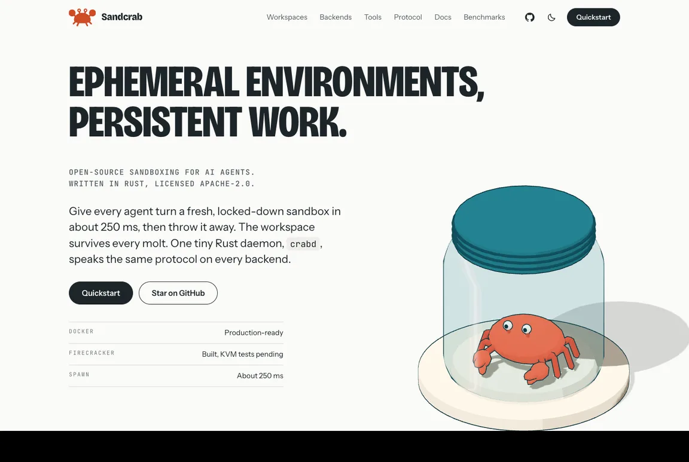

Docs site
Sandcrab, explained
Ephemeral environments with persistent workspaces for AI agents. These pages explain the V1 code, its results and its visual language.
file://. From the repo root:
python3 -m http.server -d docs/site 8000http://127.0.0.1:8000/.

Repo walkthrough
Crate map, the request path from host to crabd, workspace lifecycle, security gates, with links into the code.

How Sandcrab works
Interactive three.js presentation: sandbox lifecycle, protocol path, workspace mounts, Docker vs. Firecracker isolation, benchmark results.

Benchmarks
The short version: spawn time per backend and host (Docker, Firecracker, libkrun on VPS, bare-metal KVM, Apple M2), with a link to the full report and each host's caveats.

Crab symbology
One illustrated scene and glyph per concept: molt, shell, burrow, claws, tide clock, one wire, jar vs. tide pool.

Landing page
The public landing page: one crab walks the reader through spawn, work and molt.

3D kit
The reusable three.js crab scenes (vendored, no CDN) used by the presentation and the landing page. Add ?tune for the tuning panel.